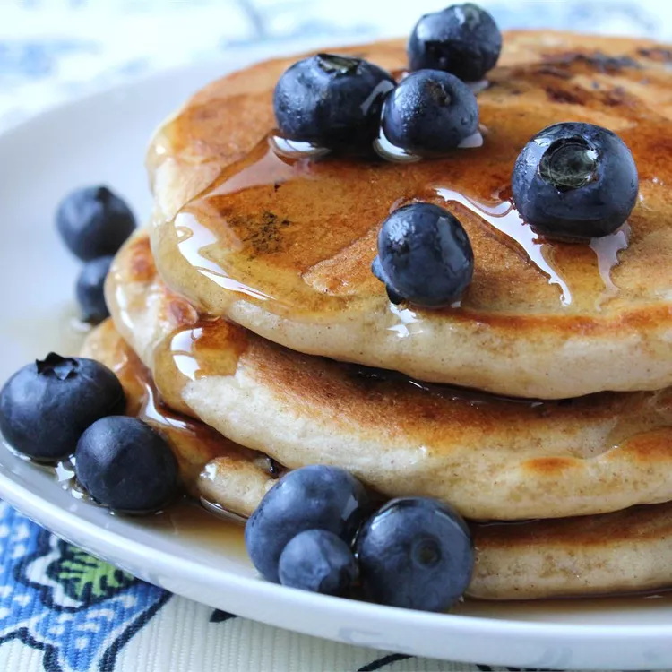

Pancake

Description
A pancake (or hotcake, griddlecake, or flapjack) is a flat cake, often thin and round, prepared from a starch-based batter that may contain eggs
, milk and butter and cooked on a hot surface such as a griddle or frying pan, often frying with oil or butter.
Ingredients
- Flour
- Sugar
- Milk
- Eggs
- Butter
Steps
- Mix the dry Ingredients: combine flour, fugar, baking poweder.
- Mix the wet ingredients: Beat the eggs, melted butter.
- Make the pancakes: Add wet and dry ingredients. Add pancakes to pan and the serve.